The following objects are masked from 'package:stats':
filter, lag
The following objects are masked from 'package:base':
intersect, setdiff, setequal, union
library(ggplot2)#install.packages("gapminder") #You likely arleady have this. only need to run this once, then comment it back outlibrary(gapminder)
We’re going to be looking at the gapminder data again today. The data ships inside the package, so instead of a load() command we just call it up:
Getting to know the data
data(gapminder)gapminder <-as.data.frame(gapminder) # the package hands us a "tibble"; this makes it behave like the data frames we're used to
This dataset contains country level economic, demographic, and health data for 142 countries, measured every five years from 1952 to 2007. The data are old. We would not want to use for research, but it is convenient for teaching. Life expectancy and population come from the Gapminder Foundation’s compilation of national statistical agency and UN records, GDP per capita comes from the Penn World Table / Maddison Project historical income estimates, and the continent classification comes from Gapminder.
Here’s a Codebook:
Variable
Description
country
The country from which data comes (142 countries)
continent
The continent the country sits on: Africa, Americas, Asia, Europe, or Oceania
year
The year from which data comes (1952 to 2007, in five year steps)
lifeExp
Life expectancy at birth, in years, for a country-year
pop
The total population of a country in a given year
gdpPercap
Gross Domestic Product per capita in a country-year, in inflation-adjusted 2005 US dollars (adjusted for purchasing power parity, so a dollar buys roughly the same basket of goods in every country)
Africa Americas Asia Europe Oceania
624 300 396 360 24
# Subset for the year 2007gap2007 <-subset(gapminder, year ==2007) # We'll just use one years of data to maintain our assumption of independence. ie USA from 2007 is dependent on USA data from 2002
Lets look at the relationship between the wealth of a country and how long its people live.
plot(gap2007$gdpPercap, gap2007$lifeExp, xlab="GDP per Capita", ylab="Life Expectancy", main="National Wealth & Life Expectancy", pch=10) #creates a scatterplot
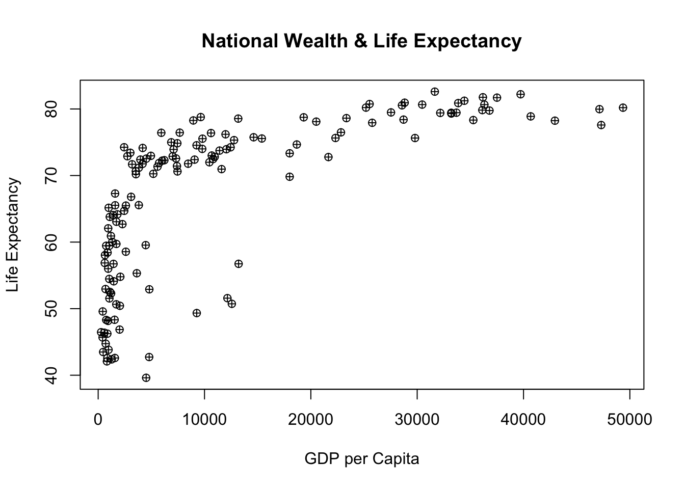
#What type of relationship does this look like? What terms could we use to describe it? Is it a straight line? Which countries are those four points way out on the right, and what should we do about them?
#To make our coefficients readable let's rescale GDP per capita.gap2007$gdpThousands <- gap2007$gdpPercap/1000# GDP per capita measured in thousands of dollars. Nothing about the relationship changes, we are just moving a decimal point so the output doesn't come back as 0.000637 and force us to count zeroes out loud in front of the class.summary(gap2007$gdpThousands)
Min. 1st Qu. Median Mean 3rd Qu. Max.
0.2776 1.6248 6.1244 11.6801 18.0088 49.3572
hist(gap2007$gdpThousands)
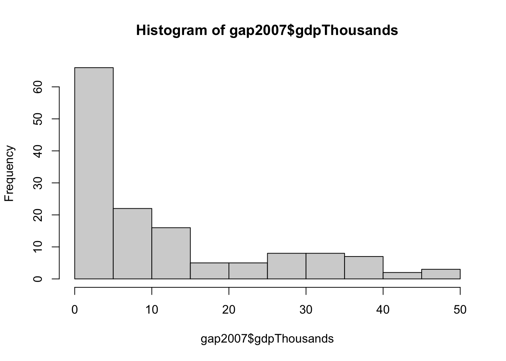
hist(gap2007$lifeExp) #note the two humps. Hold that thought until the barplot section.
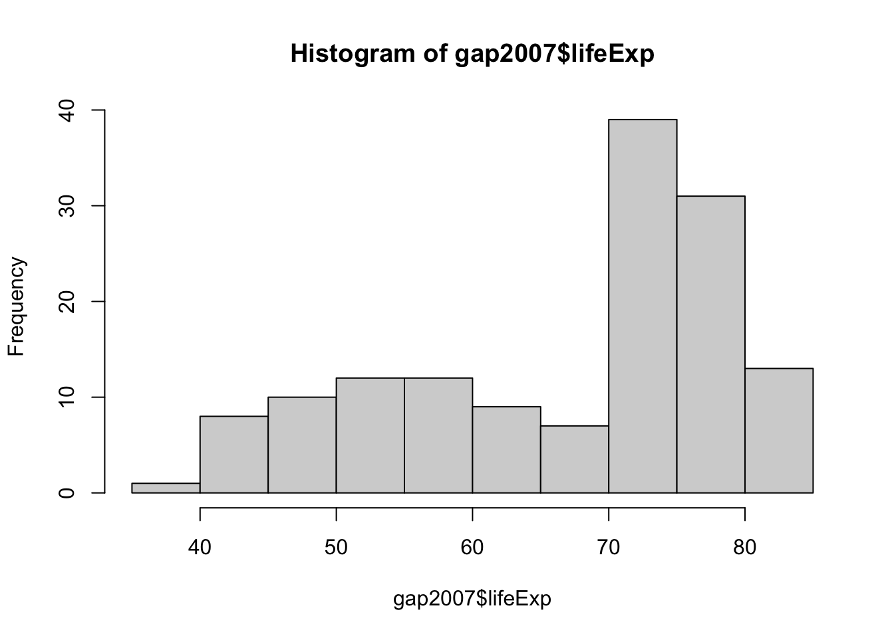
gap2007$loggdp <-log(gap2007$gdpPercap) # The "log" command takes the natural log. We do this because the scatterplot above bends: going from $500 to $1,500 does very different things to life expectancy than going from $40,000 to $41,000. Logging income turns "percent change" into a straight line.hist(gap2007$loggdp)
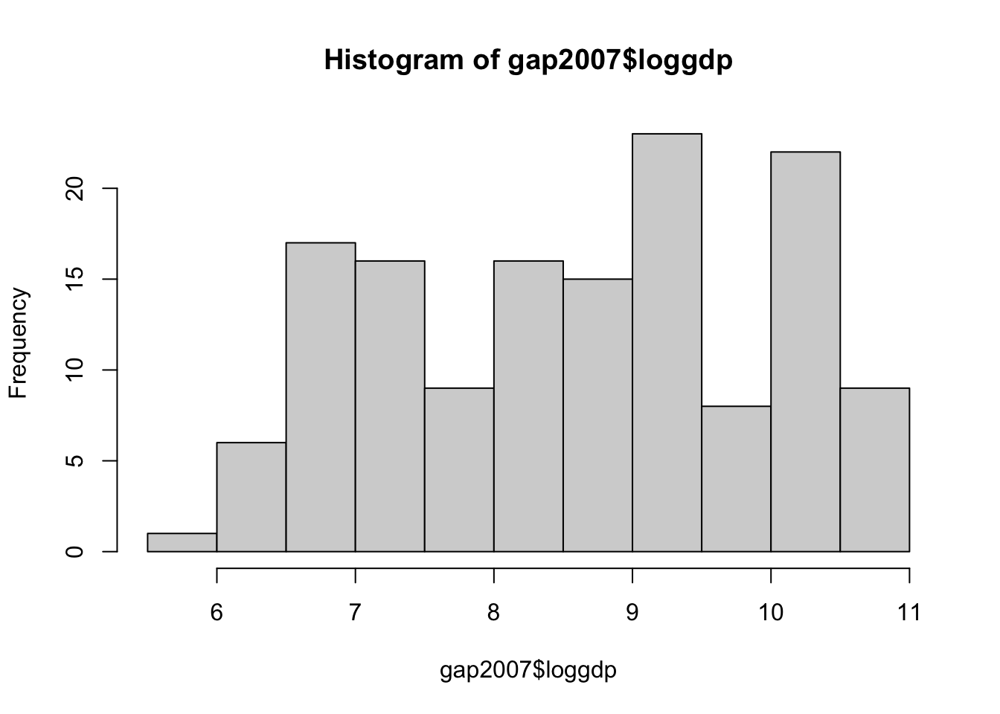
Confidence Intervals Barplot
Life Expectancy by Continent (with 95% Confidence Intervals)
Remember that two-humped histogram of lifeExp? Let’s find out what’s underneath it. A regression line is one way to summarize the data; sometimes we just want group means. But a bare bar chart of means is a lie of omission - it shows you the estimate and hides the uncertainty. So we build the interval ourselves.
# First, the ingredients. A confidence interval needs three things: the mean, the standard error, and a critical value.continent_stats <- gap2007 %>%group_by(continent) %>%summarise(mean_life =mean(lifeExp),sd_life =sd(lifeExp),n =n()) %>%mutate(se = sd_life/sqrt(n), # standard error of the mean: how much the mean itself bounces aroundtcrit =qt(0.975, df = n-1), # critical t value. 0.975 (not 0.95) because the 5% is split between two tailslower = mean_life - tcrit*se, # lower boundupper = mean_life + tcrit*se) # upper boundcontinent_stats # Look at the n column before you look at anything else.
Base R version. barplot() draws the means, arrows() draws the intervals on top of them (there’s no “errorbar” command in base R, so we cheat with headless arrows).
bp <-barplot(continent_stats$mean_life,names.arg = continent_stats$continent,ylim =c(0, 95),xlab ="Continent", ylab ="Life Expectancy (Years)",main ="Mean Life Expectancy by Continent, 2007",sub ="95% Confidence Intervals",col ="grey80")arrows(x0 = bp, y0 = continent_stats$lower,x1 = bp, y1 = continent_stats$upper,angle =90, code =3, length =0.08, lwd =2, col ="red") # code=3 puts a cap on both ends, angle=90 makes those caps flatabline(h =mean(gap2007$lifeExp), lty =2, col ="blue") # the world average (67.0) for reference
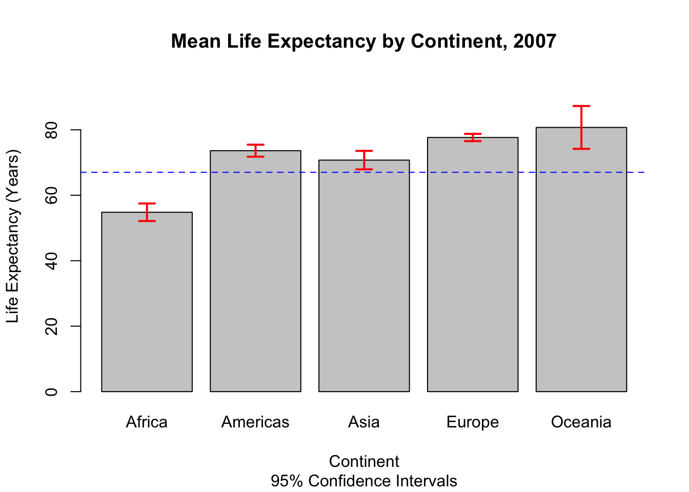
ggplot version, which has an actual error bar command(much easier, so I almost always do it this way):
ggplot(continent_stats, aes(x = continent, y = mean_life)) +geom_col(fill ="steelblue", width = .65) +geom_errorbar(aes(ymin = lower, ymax = upper), width = .15, color ="red", linewidth = .8) +geom_hline(yintercept =mean(gap2007$lifeExp), linetype ="dashed", color ="grey30") +labs(title ="Mean Life Expectancy by Continent, 2007",subtitle ="Bars are means; whiskers are 95% confidence intervals",x ="Continent", y ="Life Expectancy (Years)") +theme_classic()
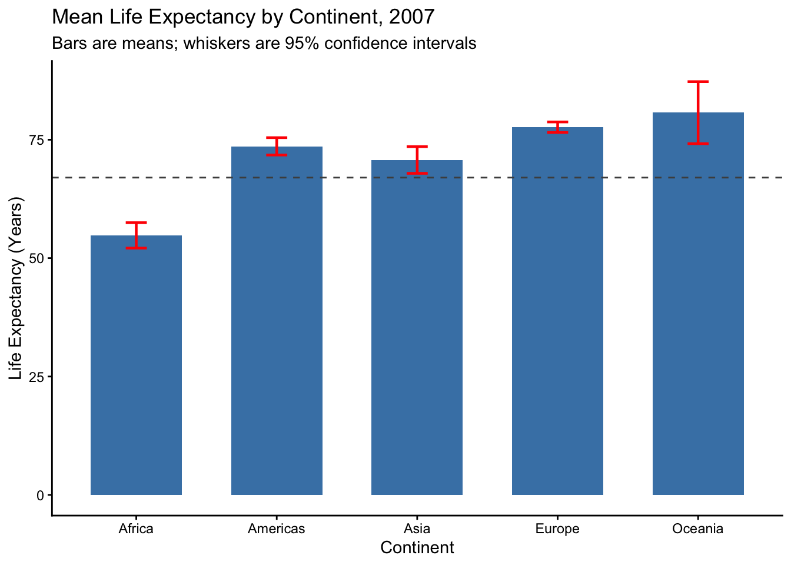
How to read this:
Africa: 54.8 years [52.1, 57.5]. Europe: 77.6 years [76.5, 78.8]. Those intervals don’t come anywhere near overlapping, so we can say with confidence that this is not sampling noise
Oceania: 80.7 years [74.2, 87.3]. That interval is enormous. Not because Australia and New Zealand disagree with each other (they’re within a year of one another), but because n = 2. With 2 observations the t critical value is 12.7 instead of about 2. The bar is the tallest on the chart and it is the one you should trust least. This is the whole reason we put intervals on bar charts.
Africa’s interval is also noticeably wider than Europe’s despite Africa having 52 countries and Europe having 30. Why? Look back at the sd column.
Note the ambiguity of what we’re even doing here: these are all the countries on each continent, not a sample drawn from them. So what population are we making an inference about? Worth arguing about — go ahead.
# The lazy way, for when you don't need the table. ggplot will compute the interval for you:ggplot(gap2007, aes(x = continent, y = lifeExp)) +stat_summary(fun = mean, geom ="bar", fill ="grey80") +stat_summary(fun.data = mean_cl_normal, geom ="errorbar", width = .15, color ="red") +# needs the Hmisc package installedlabs(title ="Same Plot, Less Typing", x ="Continent", y ="Life Expectancy (Years)") +theme_classic()
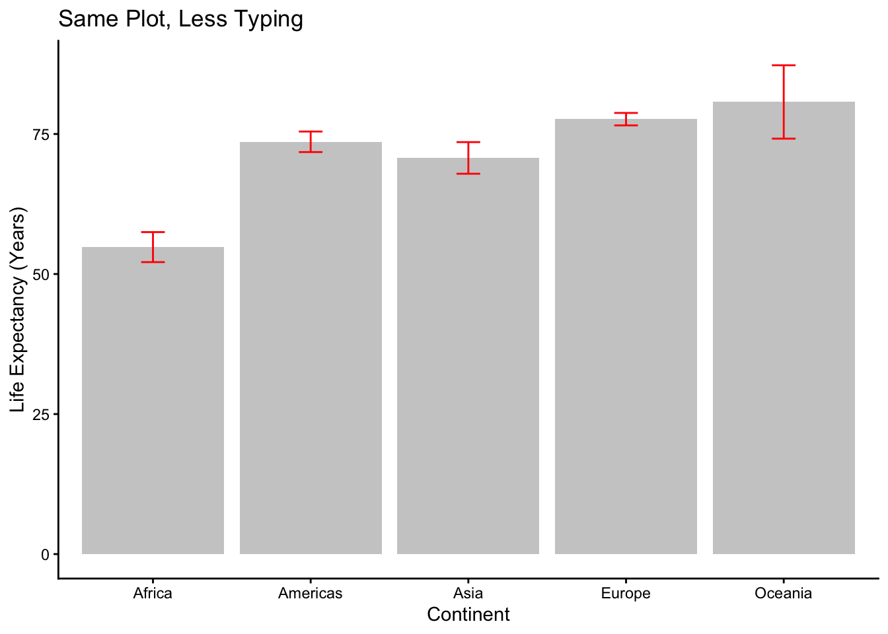
Convenient, but now you can’t see the n. Prefer the version where you had to look at your own numbers.
First tests of association
cov(gap2007$gdpPercap, gap2007$lifeExp) #Covariance, in isolation can't interpret much more than sign
[1] 105368
cor(gap2007$gdpPercap, gap2007$lifeExp) #Correlation, range from -1 to 1. Note: There is no defined rule as to when variables are significant or not. The farther from 0 the greater the relationship.
[1] 0.6786624
cor(gap2007$loggdp, gap2007$lifeExp) #Compare this to the one above. Same two concepts, better functional form.
[1] 0.8089803
Can create correlation matrix with select variables. This is a good way to get a glimpse (start thinking about) the relationships between lots of variables.
gap2 <-select(gap2007, lifeExp, gdpPercap, loggdp, pop) #note need these to be continuous variablescor(gap2)
pairs(gap2) #Gives a quick look graphically(numbers far more useful)
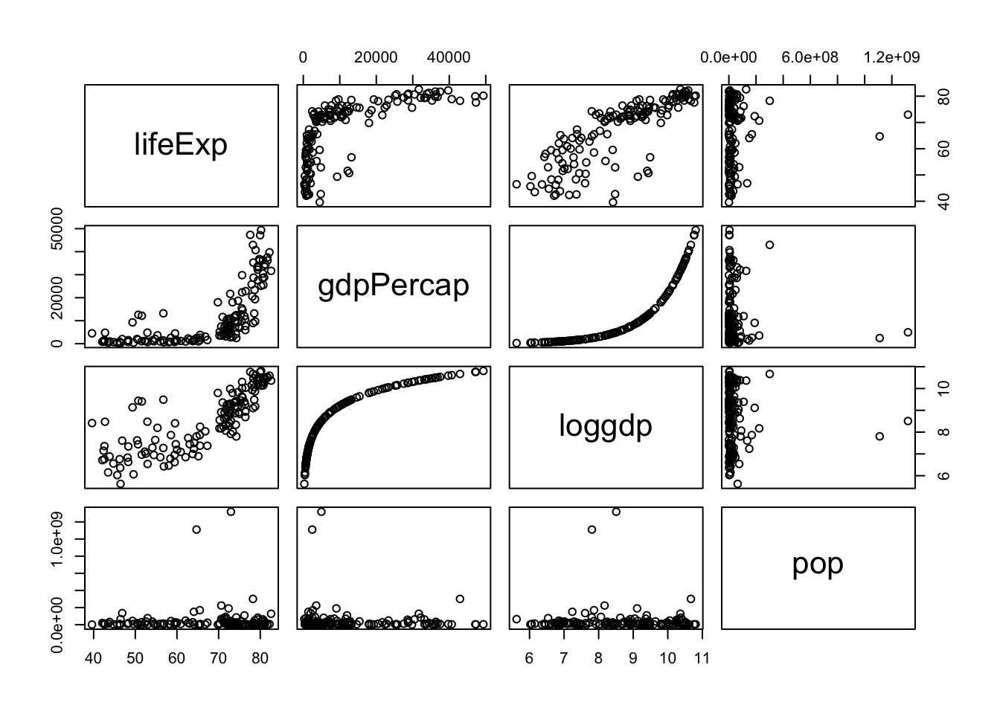
#Does population have any relationship with life expectancy? Should it?
#Regression - woooohooooo Lets look at the relationship between GDP per capita (gdpPercap) and Life Expectancy (lifeExp)
Our model: Life Expectancy = \(\beta_0\) + \(\beta_1\) GDP per Capita + e
model1 <-lm(lifeExp ~ gdpPercap, data = gap2007) #creates a regression model. lm = linear model. the "<-" creates an object that simplifies later steps. summary(model1) #What does this output tell us? ie how do we interpret the coefficients and p-values? Is the relationship statistically significant?
Call:
lm(formula = lifeExp ~ gdpPercap, data = gap2007)
Residuals:
Min 1Q Median 3Q Max
-22.828 -6.316 1.922 6.898 13.128
Coefficients:
Estimate Std. Error t value Pr(>|t|)
(Intercept) 5.957e+01 1.010e+00 58.95 <2e-16 ***
gdpPercap 6.371e-04 5.827e-05 10.93 <2e-16 ***
---
Signif. codes: 0 '***' 0.001 '**' 0.01 '*' 0.05 '.' 0.1 ' ' 1
Residual standard error: 8.899 on 140 degrees of freedom
Multiple R-squared: 0.4606, Adjusted R-squared: 0.4567
F-statistic: 119.5 on 1 and 140 DF, p-value: < 2.2e-16
summary(lm(lifeExp ~ gdpPercap, data = gap2007)) #gives us the same thing without creating an object
Call:
lm(formula = lifeExp ~ gdpPercap, data = gap2007)
Residuals:
Min 1Q Median 3Q Max
-22.828 -6.316 1.922 6.898 13.128
Coefficients:
Estimate Std. Error t value Pr(>|t|)
(Intercept) 5.957e+01 1.010e+00 58.95 <2e-16 ***
gdpPercap 6.371e-04 5.827e-05 10.93 <2e-16 ***
---
Signif. codes: 0 '***' 0.001 '**' 0.01 '*' 0.05 '.' 0.1 ' ' 1
Residual standard error: 8.899 on 140 degrees of freedom
Multiple R-squared: 0.4606, Adjusted R-squared: 0.4567
F-statistic: 119.5 on 1 and 140 DF, p-value: < 2.2e-16
Significance P-value: 1.69e-20 (R prints it as <2e-16 for the F-test) - statistically significant at the .001 level
Sign Estimate: Positive
Size Estimate: 0.0006371; A one dollar increase in a country’s GDP per capita is associated with an additional 0.0006371 years of life expectancy.
Substantive: An additional $1,000 in GDP per capita is associated with about 0.64 more years of life. Flip it around: roughly $1,570 of income per person buys one additional year of life expectancy, on average, in 2007.
(Sanity check that number. Norway had a GDP per capita of $49,357 in 2007, so our model expects Norwegians to live 91 years. They actually lived 80.2. The line is doing something reasonable in the middle of the data and something silly at the edges — which is exactly why we logged income above, and exactly why you should always ask what a model predicts at values you can check.)
Because those raw coefficients are painful to read, let’s re-run the same model with income in thousands. Same relationship, friendlier output:
model2 <-lm(lifeExp ~ gdpThousands, data = gap2007)summary(model2) # Compare the coefficient, the and the R-squared to model1. Which of them changed? Which didn't? Why not?
Call:
lm(formula = lifeExp ~ gdpThousands, data = gap2007)
Residuals:
Min 1Q Median 3Q Max
-22.828 -6.316 1.922 6.898 13.128
Coefficients:
Estimate Std. Error t value Pr(>|t|)
(Intercept) 59.56565 1.01041 58.95 <2e-16 ***
gdpThousands 0.63713 0.05827 10.93 <2e-16 ***
---
Signif. codes: 0 '***' 0.001 '**' 0.01 '*' 0.05 '.' 0.1 ' ' 1
Residual standard error: 8.899 on 140 degrees of freedom
Multiple R-squared: 0.4606, Adjusted R-squared: 0.4567
F-statistic: 119.5 on 1 and 140 DF, p-value: < 2.2e-16
Now we can show it graphically(This looks familiar . . . . .)
plot(gap2007$gdpThousands, gap2007$lifeExp, xlab ="GDP per Capita (Thousands of $)", ylab ="Life Expectancy (Years)", main ="GDP per Capita & Life Expectancy", pch=10) #creates a scatterplotabline(model2) #puts the regression line onto our plot
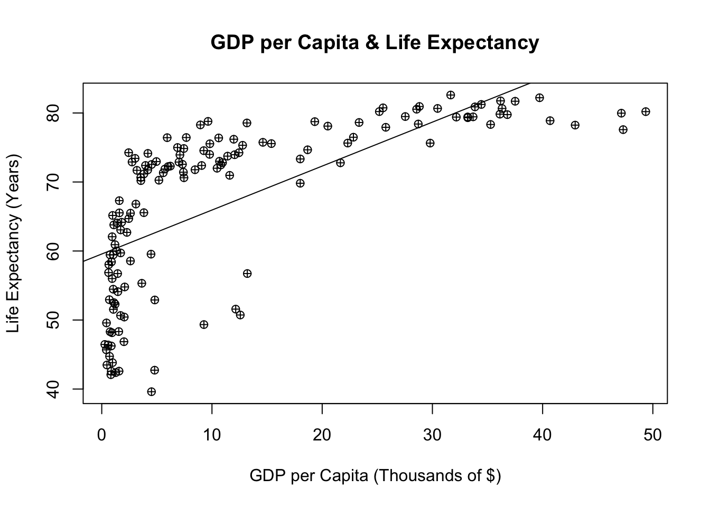
#Look at where the points sit relative to the line on the far left and the far right. Systematic misses like that have a name: we'll get to it when we do residuals.
Our Model: Life Expectancy = \(\beta_0\) + \(\beta_1\) * (GDP per Capita/1,000) + e Life Expectancy = 59.566 + 0.6371 * (GDP per Capita/1,000) + e
Break: Is this causal?
Do it yourself Find a relationship you are interested in testing(use the codebook above, and remember you can log things or subset to a continent). Raise your hand when you’re ready to try to interpret it for the the class.(Yes, I’m serious)
Can add a confidence interval. It is often not necessary, but it helps us visualize the uncertainty of our estimates.
plot(gap2007$gdpThousands, gap2007$lifeExp, xlab ="GDP per Capita (Thousands of $)", ylab ="Life Expectancy (Years)", main ="GDP per Capita & Life Expectancy", sub="95% Confidence Interval", pch=10)abline(model2, col="blue") newx <-seq(0, 50, 1) # creates sequence between 0 and 50 by 1 (Use your x-axis range for this)a <-predict(model2, newdata =data.frame(gdpThousands = newx), interval ="confidence") #predicts values for sequencelines(newx, a[,2], lty=5, col ="red") #add lineslines(newx, a[,3], lty=5, col ="red")#This shows the 95% confidence interval. Notice the bowtie shape - the band is tightest near the mean of x and flares out at the ends. Why should our uncertainty be worst where we have the fewest countries?#### We can also see what a 99% confidence interval looks like. b <-predict(model2, newdata =data.frame(gdpThousands = newx), interval ="confidence", level = .99)lines(newx, b[,2], lty=6, col="green")lines(newx, b[,3], lty=6, col="green")
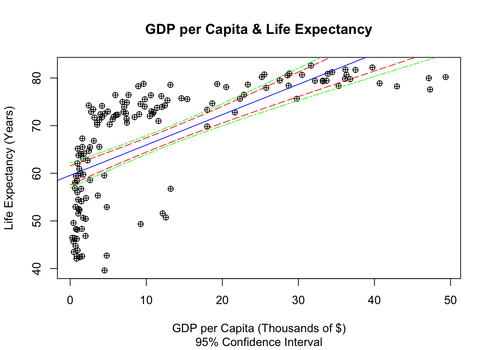
#Why does the 99% have a larger confidence interval
We can then make predictions based on a certain country’s GDP per capita:
plot(gap2007$gdpThousands, gap2007$lifeExp, xlab ="GDP per Capita (Thousands of $)", ylab ="Life Expectancy (Years)", main ="GDP per Capita & Life Expectancy")abline(model2, col="red", lwd =2)abline(v =9.0658008, col="blue", lwd =2) # Show prediction for a country with GDP per capita of $9,065.80 (this is Brazil)model2$fitted.values[which(gap2007$country =="Brazil")] # Extract prediction
180
65.34178
gap2007$lifeExp[which(gap2007$country =="Brazil")] # What actually happened
[1] 72.39
abline(h =65.34196, col="blue", lwd=2) #show the prediction#can combine if we're feeling fancyabline(h = (model2$fitted.values[which(gap2007$country =="Brazil")]), col="green", lwd=2, lty=3)
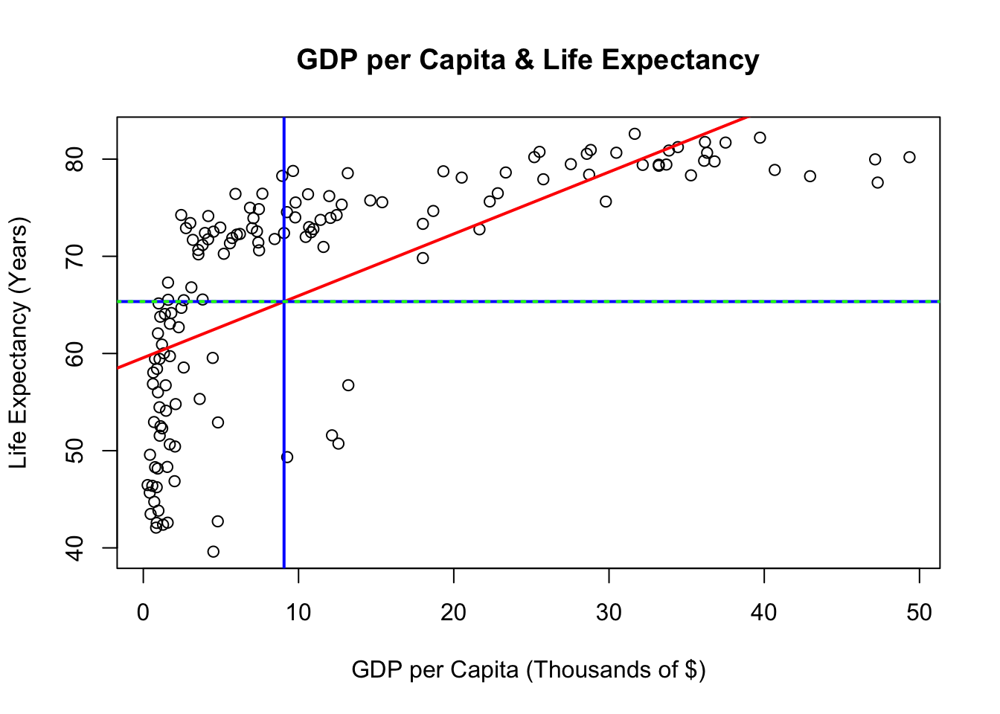
#or if not just plug it into our equation59.566+0.6371*9.0658008
[1] 65.34182
#Brazil actually lived 72.39 years and we predicted 65.34. It beat our model by about 7 years. Is that Brazil doing something right, or our model doing something wrong?
`
Your next challenge
Rerun your analysis for a different year(don’t forget about find and replace). 1952 and 1982 are both interesting. How do the results change? Is a dollar worth more or fewer years of life than it used to be? *bonus if you’re bored: add country labels to each point
#Who does our model miss worst?gap2007$resid <-resid(model2)head(gap2007[order(gap2007$resid), c("country","continent","gdpPercap","lifeExp","resid")], 5) #biggest overpredictions
country continent gdpPercap lifeExp resid
1464 Swaziland Africa 4513.4806 39.613 -22.82834
48 Angola Africa 4797.2313 42.731 -19.89113
1044 Mozambique Africa 823.6856 42.082 -18.00845
1692 Zambia Africa 1271.2116 42.384 -17.99158
888 Lesotho Africa 1569.3314 42.592 -17.97352
country continent gdpPercap lifeExp resid
1656 Vietnam Asia 2441.576 74.249 13.12774
24 Albania Europe 5937.030 76.423 13.07467
360 Costa Rica Americas 9645.061 78.782 13.07115
396 Cuba Americas 8948.103 78.273 13.00621
1272 Reunion Africa 7670.123 76.442 11.98945
#Look at those two lists. Do you see a pattern in the misses? (Hint: check the continent column, then go look up what was happening in southern Africa in 2007.) A model that misses in a pattern is a model that's missing a variable.
More Bonus code: GGplot versions of above
p <-ggplot(gap2007, aes(x = gdpThousands, y = lifeExp))+#using ggplot and datasetgeom_point(shape=10) +#basic scatter plotgeom_smooth(method ="lm")+labs(title="GDP per Capita & Life Expectancy")+xlab("GDP per Capita (Thousands of $)")+ylab("Life Expectancy (Years)")p
#Show Country Namesggplot(gap2007, aes(x = gdpThousands, y = lifeExp, label = country))+#using ggplot and datasetgeom_text() +# Change the geom typegeom_smooth(method ="lm")+labs(title="GDP per Capita & Life Expectancy") +xlab("GDP per Capita (Thousands of $)") +ylab("Life Expectancy (Years)")
`geom_smooth()` using formula = 'y ~ x'
Warning: The following aesthetics were dropped during statistical transformation: label.
ℹ This can happen when ggplot fails to infer the correct grouping structure in
the data.
ℹ Did you forget to specify a `group` aesthetic or to convert a numerical
variable into a factor?
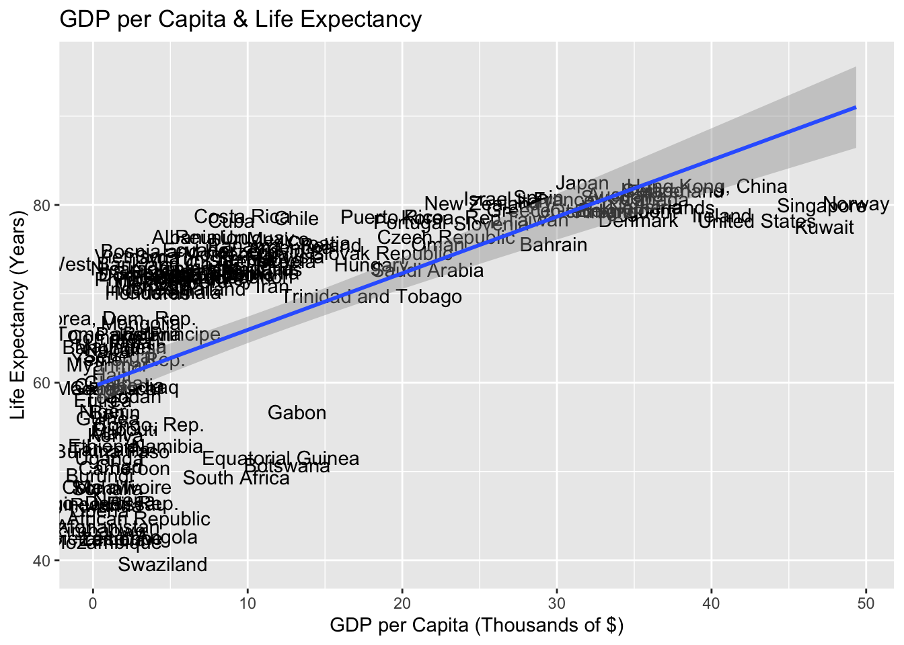
#Messy!!!#Just label the USgap2007$usa <-ifelse(gap2007$country=="United States", "United States", "") # Pick country you want to have labeled & specify how you want it labeled)table(gap2007$usa)
United States
141 1
w <-ggplot(gap2007, aes(x = gdpThousands, y = lifeExp, label = usa))+geom_point(shape =10) +geom_text(hjust =1.1, color ="red") +geom_smooth(method ="lm")+labs(title="GDP per Capita & Life Expectancy") +xlab("GDP per Capita (Thousands of $)") +ylab("Life Expectancy (Years)")w
`geom_smooth()` using formula = 'y ~ x'
Warning: The following aesthetics were dropped during statistical transformation: label.
ℹ This can happen when ggplot fails to infer the correct grouping structure in
the data.
ℹ Did you forget to specify a `group` aesthetic or to convert a numerical
variable into a factor?
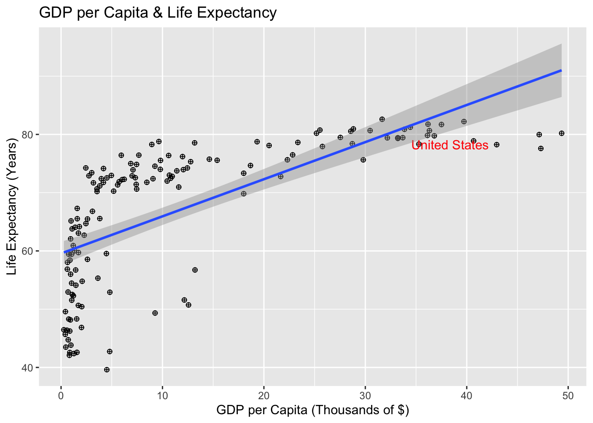
# We're way out on the right and sitting well below the line (residual of -8.7 years). What does it mean that we're below the regression curve? #And finally, the plot the whole world knows. Color by continent, size by population, log the x axis:ggplot(gap2007, aes(x = gdpPercap, y = lifeExp, size = pop, color = continent)) +geom_point(alpha = .6) +scale_x_log10() +# here's that log transformation again, doing it to the axis instead of the variablescale_size(range =c(1,15), guide ="none") +labs(title="GDP per Capita & Life Expectancy, 2007", x="GDP per Capita (log scale)", y="Life Expectancy (Years)") +theme_classic()
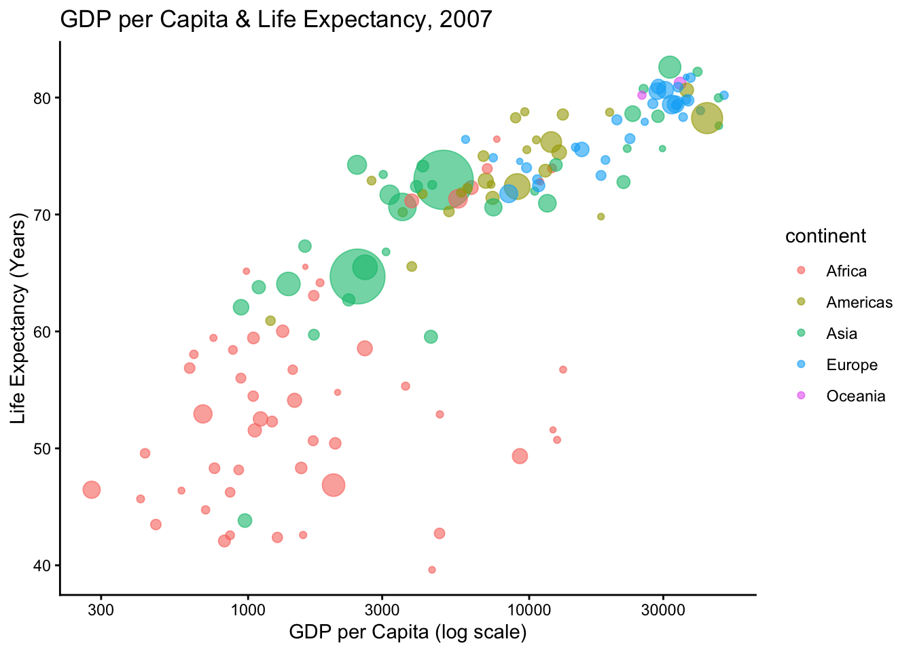
# Now the relationship is basically a straight line. Which means our original model - the one we spent the whole class interpreting - had the wrong functional form. Everything we said about it was correctly computed and still somewhat wrong. Welcome to regression.
Bonus Code: Merging data
The gapminder data is obviously quite limited in the variables we can examine. Say we wanted to add some variables to our dataset. This process is called merging.
library(wbstats) #load the world bank package from Tuesday. Normally you would have data on your computer that you would be using.
httr::set_config(httr::timeout(120)) httr::set_config(httr::timeout(160)) # keep this or it dieswbdf1 <-wb_data(indicator =c(gdp_pc ="NY.GDP.PCAP.CD",gdp_growth ="NY.GDP.MKTP.KD.ZG",electricity_access ="EG.ELC.ACCS.ZS",renewable_energy ="EG.FEC.RNEW.ZS",forest_area ="AG.LND.FRST.ZS",ag_land ="AG.LND.AGRI.ZS",resource_rents ="NY.GDP.TOTL.RT.ZS",co2_per_cap ="EN.GHG.CO2.PC.CE.AR5",pm25 ="EN.ATM.PM25.MC.M3",clean_cooking ="EG.CFT.ACCS.ZS",energy_use ="EG.USE.PCAP.KG.OE",refugees_origin ="SM.POP.RHCR.EO",mil_exp ="MS.MIL.XPND.GD.ZS" ),country ="countries_only",start_date =2007, end_date =2007)#There are some troubles with the API so hopefully this works.
*grabbing all countries and, like gapminder, just 2007.
# install.packages("countrycode")library(countrycode) # new package that helps convert country codesgap2007$iso3c <-countrycode(gap2007$country, origin ="country.name", destination ="iso3c") #convert country name to standardized iso3 code#checkhead(gap2007$iso3c)
[1] "AFG" "ALB" "DZA" "AGO" "ARG" "AUS"
# Merge: gapminder is the base; keep all 142 rowsmerged <-left_join(gap2007, wbdf1, by ="iso3c")# We can now run data running this merged data set